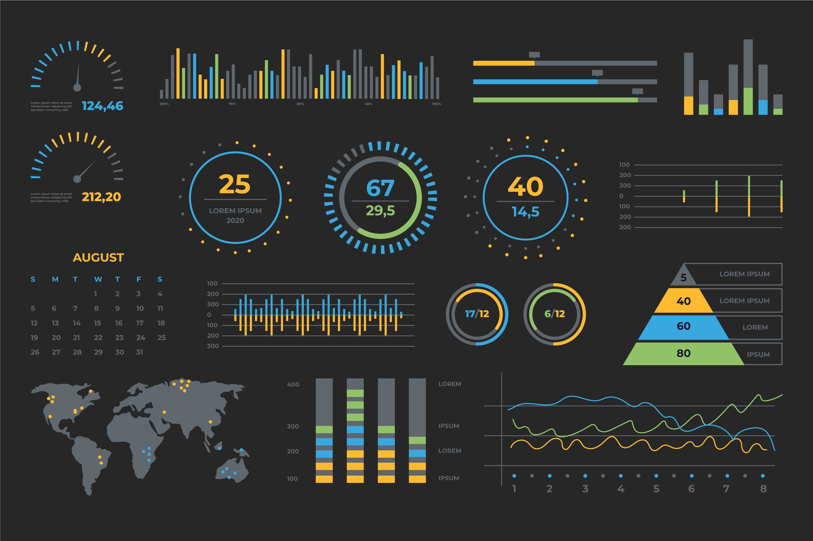
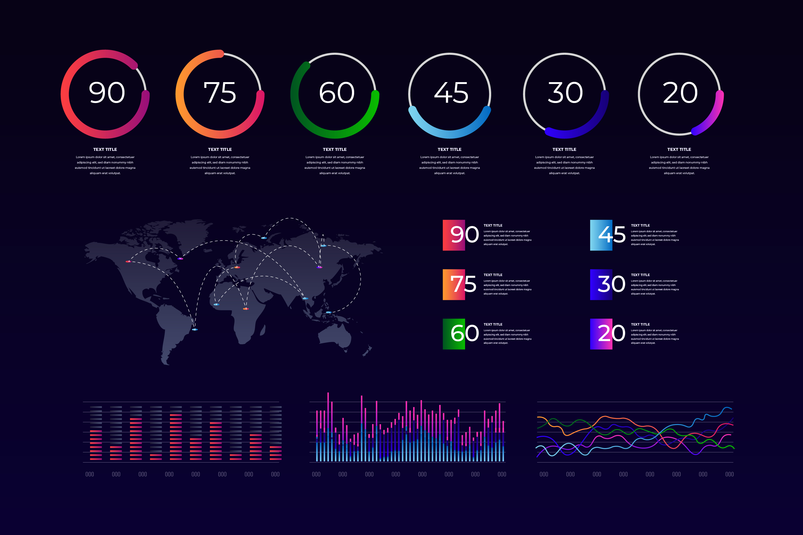
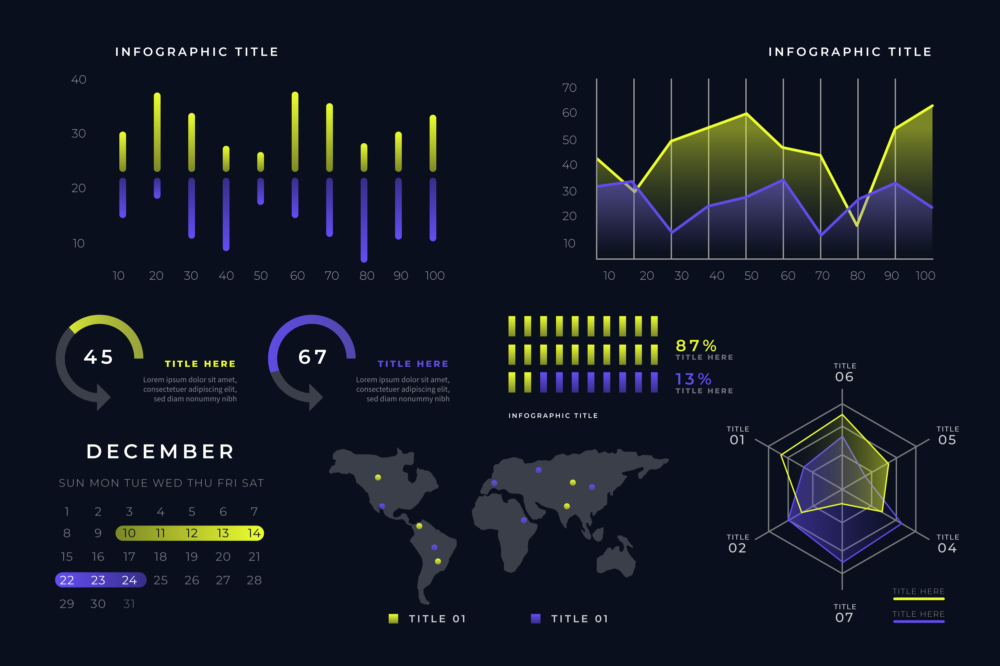

Predictive Agricultural Intelligence
Predictive Agricultural Intelligence refers to the comprehensive use of advanced data analytics, machine learning, and AI-driven models to forecast critical aspects of farming. By analyzing real-time and historical data, this approach provides actionable insights into weather patterns, crop yields, pest risks, irrigation needs, market trends, and soil health. This intelligence empowers farmers to make informed decisions, optimize resource usage, and mitigate risks, ultimately leading to increased productivity, sustainability, and profitability.
- Analysis:
Predict daily and weekly weather conditions such as rainfall, temperature, and frost risk using historical and real-time data.
- Impact:
Farmers can improve their operational decisions with up to 85% accuracy in weather forecasts, reducing losses from unexpected weather events.

- Analysis:
Utilize past crop performance data, weather patterns, and soil conditions to estimate potential yields for the current season.
- Impact:
This can lead to up to a 20-30% increase in yield predictions accuracy, helping farmers optimize planting and harvesting schedules.
- Analysis:
Monitor environmental factors such as humidity, temperature, and crop history to predict pest and disease outbreaks.
- Impact:
Early detection and prevention can reduce crop damage by up to 40-50% , minimizing the need for costly interventions.

- Analysis:
Analyze soil moisture levels, weather forecasts, and crop water requirements to plan irrigation schedules.
- Impact:
Optimizing irrigation through predictive analytics can lead to a 15-25% reduction in water usage, while maintaining crop health.
- Analysis:
Leverage historical price data, demand trends, and weather impacts to forecast future market prices for crops.
- Impact:
Accurate price predictions can improve profit margins by up to 10-15% by timing the market correctly.

- Analysis:
Predict changes in soil nutrient levels, pH balance, and overall health based on previous usage, crop rotation, and environmental conditions
- Impact:
Proactive soil management can increase soil productivity by 10-20%over time, ensuring long-term sustainability.